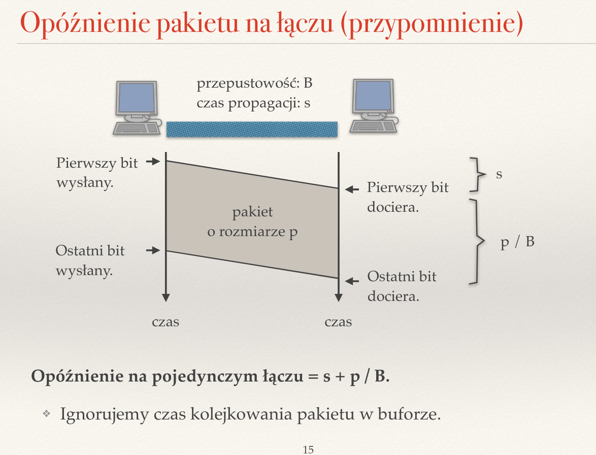
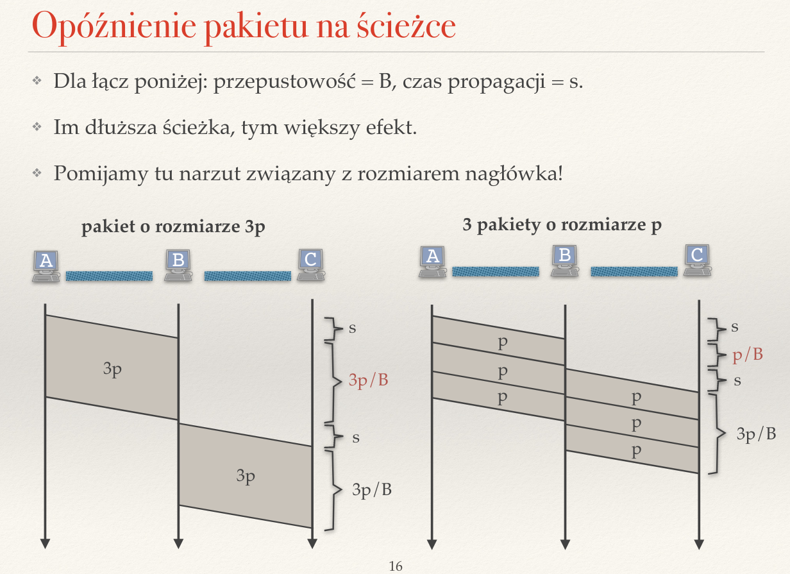
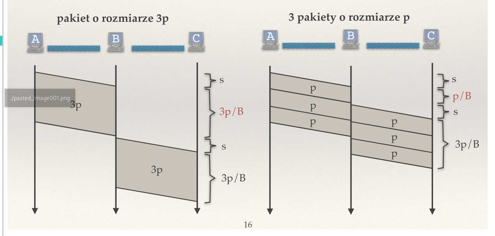
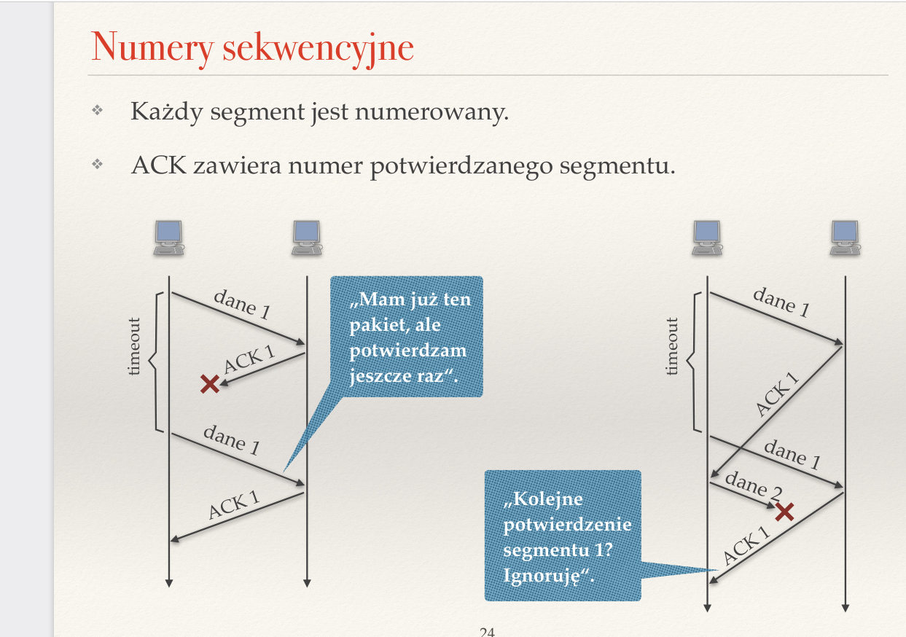
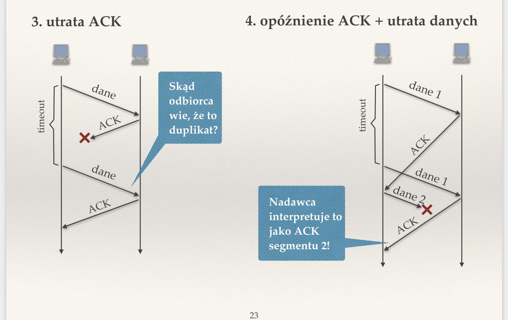
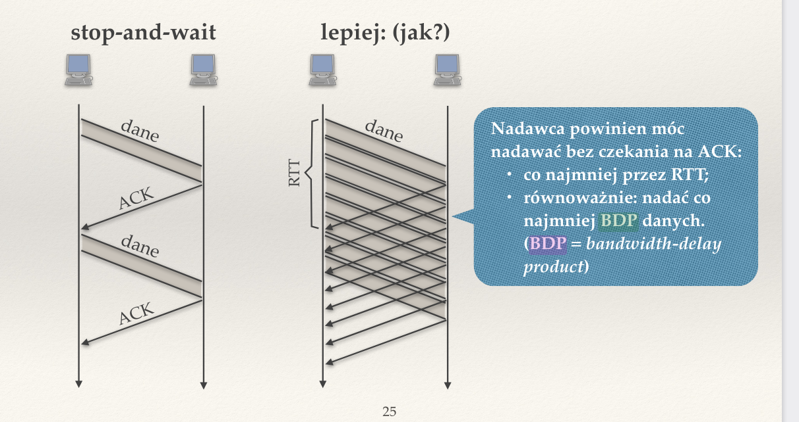

Created Thursday 23 June 2022
Zagadnienia
❖ Co może stać sie z przesyłanym ciągiem pakietów IP podczas zawodnego i niezawodnego transportu?
Zawodny
- uszkodzone
- powtórzony (przez wyższe lub nizsze warstwy)
- zamieniona kolejność
- opóźnione
- zgubione
Niezawodny
- opóźnione
- powtórzone (nie boli nas, bo niezawodny transport je pominie)
W skrócie niezawodny transport gwarantuje nam, że wszystkie dane kiedyś do nas dotrą i to w poprawnej kolejności.
❖ Co to jest kontrola przepływu?
Kontrola przepływu to mechanizm dostosowywania prędkości transmisji przez nadawcę do szybkości, z jaką pracuje odbiorca.
❖ Czym różnią się protokoły UDP i TCP? Podaj zastosowania każdego z nich.
UDP — zawodny transport, oferuje jedynie ideę portów. Jest szybki, ale zawodny — wykorzystywany tam, gdzie możemy sobie pozwolić na utratę danych, a zależy nam na szybkości — gry, gdzie przesyłamy niewielkie ilości danych, np. DNS, DHCP, chcemy pełnej kontroli nad danymi (NFS) lub jesteśmy ograniczeni sprzętowo (słabsze urządzenia mogą być zbyt wolne dla TCP).
TCP — oferuje niezawodny transport. Stosujemy go tam, gdzie potrzebujemy przesyłać duże ilości danych, np. HTTP(S).
❖ Co to jest segmentacja? Dlaczego segmenty mają ograniczoną wielkość? Rozwiń skrót MSS.
MSS — Maximum Segment Size to MTU - rozmiar nagłówka IP - rozmiar nagłówka TCP, czyli po prostu rozmiar samych danych w pakiecie TCP.
Duże segmenty są podatne na zakłócenia (głównie sieci bezprzewodowe), powodują problemy w szeregowanu w kolejce wyjściowej routera (małe pakiety mają duże opóźnienia), ale przede wszystkim segmentacja powoduje mniejsze opóźnienia na długich ścieżkach.

❖ Jak nazywają się jednostki danych przesyłane w kolejnych warstwach?
Warstwa transportowa — segmenty (gdy warstwa dzieli na części, np. TCP) lub datagramy (gdy robi to użytkownik — UDP)
Warstwa sieciowa — pakiety
Warstwa łącza danych — ramki
❖ Jak małe pakiety zmniejszają opóźnienie przesyłania danych?
Protokoły zanim zaczną przesyłać odebrane dane muszą zaczekać, aż odbiorą pełen pakiet. Dlatego mniejsze pakiety mogą sprawić, że zmniejszymy opóźnienia.

❖ Wytłumacz znaczenie skrótów RT T i RTO. Na jakiej podstawie ustalana jest wartość RTO?
RTT (Round Trip Time) — czas potrzebny na wysłanie pakietu i powrót potwierdzenia, czyli 2x czas propagacji.
RTO (Retransmission Timeout) — 2x avgRTT + 4xvarRTT. Timeout, jaki ustawiamy dla segmentu.
/pasted_image003.png)
❖ Jak protokoły niezawodnego transportu wykrywają duplikaty pakietów i potwierdzeń?
Numerują pakiety i potwierdzenia za pomocą numerów sekwencyjnych.

❖ Opisz algorytm Stop-and-Wait. Jakie są jego wady i zalety?
Algorytm Stop-and-Wait to prosty algorytm gwarantujący niezawodność (przy użyciu numerów sekwencyjnych). Nadawca i odbiorca działają zgodnie z następującym schematem:
Nadawca:
- wyślij dane
- czekaj na potwierdzenie
- jeśli otrzymasz potwierdzenie, to wyślij następne dane
- jeśli nie otrzymasz potwierdzenia (timeout), to wyślij ponownie te same dane
Odbiorca:
- czekaj na pakiety
- jeśli odbierasz dane, to wyślij potwierdzenie i przekaż dane do aplikacji
Użycie numerów sekwencyjnych pozwala nam uniknąć sytuacji, gdy mylimy potwierdzenia lub odbieramy wielokrotnie ten sam pakiet i traktujemy go jako inny.

❖ Do czego służą numery sekwencyjne w niezawodnym protokole transportowym?
Służą do unikania sytuacji, w której zinterpretujemy potwierdzenie jednego segmentu jako potwierdzenie innego segmentu (obrazek). Pozwalają nam także rozróżniać duplikaty segmentów od dwóch różnych segmentów, ale z takimi samymi danymi.
/pasted_image006.png)
❖ Opisz algorytm okna przesuwnego.
Odbiorca i nadawca posiadają okno przesuwne, które jest buforem na odebrane segmenty. Zanim segmenty zostaną wysłane do aplikacji, transport czeka, aż zostanie odebrany pewien ciągły zbiór segmentów (fragment okna bez dziury na początku okna). Następnie taki prefiks jest przesyłany do aplikacji, wysyłane jest potwierdzenie (lub potwierdzenia, zależy od tego czy mamy potwierdzenia selektywne lub skumulowane — każdy z osobna, czy tylko ostatni segment jaki odebraliśmy) odebranych segmentów i okno jest przesuwane w lewo tak, że czeka teraz na pierwszy nieodebrany jeszcze pakiet i następne. Opisana wersja to pełny algorytm okna przesuwnego, istnieje też prostsza wersja Go-Back-N, gdzie rozmiar okna (RWS) to 1, jednak jest ona mniej efektywna.
/pasted_image007.png)
/pasted_image008.png)
❖ Jaki jest związek między rozmiarem okna a BDP (bandwidth-delay product)?
Chcemy, żeby nadawca mógł nadawać bez oczekiwania na ACK co najmniej przez RTT lub równoważnie powinien móc nadawać co najmniej BDP danych (Bandwidth-Delay Product), czyli ile czekamy na wysłanie iluśtam bajtów danych.

❖ Opisz i porównaj następujące mechanizmy potwierdzania: Go-Back-N, potwierdzanie selektywne, potwierdzanie skumulowane.
Go-Back-N odpowiada oknu przesuwnemu o rozmiarze 1. Jeśli odbiorca dostał już segmenty do P włącznie, wtedy wysyła ACK dla otrzymanego segmenty S wtedy, gdy:
- S=P+1, czyli dla następnego
- S <= P, czyli ponownie potwierdzamy już odebrane, bo może ACK zaginęło
Jest prosty w implementacji i nie trzeba nam bufora odbiorcy (bo i po co?), ale za to jest mniej wydajna niż pozostałe, gdy traci pakiety.
Potwierdzanie selektywne — odbiorca potwierdza odebranie, gdy dostał segment, który jest w oknie lub został odebrany wcześniej. Nie potwierdza, gdy jest z przyszłości (na prawo od okna). Gdy jest dokładnie pierwszym segmentem z okna, wtedy przesuwa okno do pierwszego nieodebranego. W tym wypadku wiemy dokładnie które pakiety dotarły, ale wysyłamy dużo niepotrzebnych potwierdzeń.
Potwierdzanie skumulowane — wysyła ACK tylko wtedy, gdy segment S <= LFRcvd + RWS (czyli jak w selektywnym), ale gdy przesuwamy okno, to wysyłamy tylko ACK do którego miejsca przesunęliśmy. Dzięki temu nadawca wie, dokąd może przesunąć swoje okno. Zmniejsza liczbę potwierdzeń bez generowania timeoutów. Dodatkowo możemy wprowadzic mechanizm opóźnionych potwierdzeń — jeśli są dane do wysłania w drugą stronę, to wysyłamy ACK z tymi danymi, a w p.p. wymuszamy określony czas (ułamek RTT) pomiędzy kolejnymi ACK.
❖ Dlaczego istotne jest potwierdzanie odbioru duplikatów segmentów?
Możemy na przykład wysłać jakiś segment A, i dotrze on do celu, ale nie dotrze do nas potwierdzenie. Wtedy wyślemy A ponownie, a odbiorca nie odeśle nam potwierdzenia, bo to duplikat. Będziemy wysyłali A w nieskończoność, bo odbiorca nigdy nie odeśle ACK.
❖ Co to jest okno oferowane? Jak pomaga w kontroli przepływu?
Okno oferowane to wolne miejsce w buforze, które pomaga nam w kontroli przepływu. Jest ono wysyłane nadawcy (zwykle razem z ACK). W przypadku odbiorcy eśli pakiety są potwierdzane, ale aplikacja czyta za wolno, to oferowane okno jest małe.W przypadku nadawcy zmieniamy rozmiar swojego okna na rozmiar okna oferowanego i staramy się nie wysyłać danych, których odbiorca nie może zmieścić w swoim oknie.
❖ Jakie mechanizmy niezawodnego transportu i kontroli przepływu implementowane są w protokole TCP?
- Okno oferowane
- okno przesuwne
- potwierdzanie skumulowane
- numerowanie bajtów, a nie segmentów
- timeout dla segmentów liczony to RTO
❖ Na czym polega opóźnione wysyłanie ACK w protokole TCP?
Opóźnione potwierdzenie jest stosowane wtedy, gdy nie mamy danych do wysłania (wtedy wysłałibyśmy ACk razem z danymi). Ustawiamy określony czas (ułamek RTT) między kolejnymi ACK.
❖ Na czym polega mechanizm Nagle'a? Kiedy nie należy go stosować?
Wysyłamy dane dopiero wtedy, gdy wszystkie poprzednie już są potwierdzone. Przydatne, gdy aplikacja generuje dane mniejsze niż MSS, choć czasami mechanizm ten może przeszkadzać, np. gdy chcemy wysyłać małe dane — SSH.
❖ Co oznaczają pola numer sekwencyjny i numer potwierdzenia w nagłówku TCP?
Numer sekwencyjny — numer sekwencyjny (numer pierwszego bajtu w segmencie)
Numer potwierdzenia — numer ostatniego potwierdzanego bajtu + 1
❖ Czy warstwa transportowa implementowana jest na routerach? Dlaczego?
Dawniej była implementowana na każdym łączu, ale routery lubiły przekłamywać pakiety, więc zrezygnowano z tego rozwiązania. Tylko urządzenia końcowe implementowały transport. Ale potem okazało się, że błędy te nie zawsze są związane z łączem, np. 20%-80% z pakietów w przesyle bezprzewodowym jest traconych. W ten sposób powstała zasada end-to-end. Obecnie potwierdzanie i retransmisja jest używana na poziomie warstwy łącza danych. Zatem nie — warstwa transportowa nie jest implementowana na routerach (chyba że inaczej rozumiemy treść pytania).
❖ Sformułuj słabą i silną zasadę end-to-end
Zasada end-to-end mówi nam, czy niezawodny przesył danych powinien być implementowany także na niższych warstwach. Słaba wersja twierdzi, że niższe warstwy mogą w tym pomagać, silna wersja, że nie.
/pasted_image.png){kind=link}
/pasted_image001.png){kind=link}
/pasted_image002.png){kind=link}
/pasted_image004.png){kind=link}
/pasted_image005.png){kind=link}
/pasted_image009.png){kind=link}